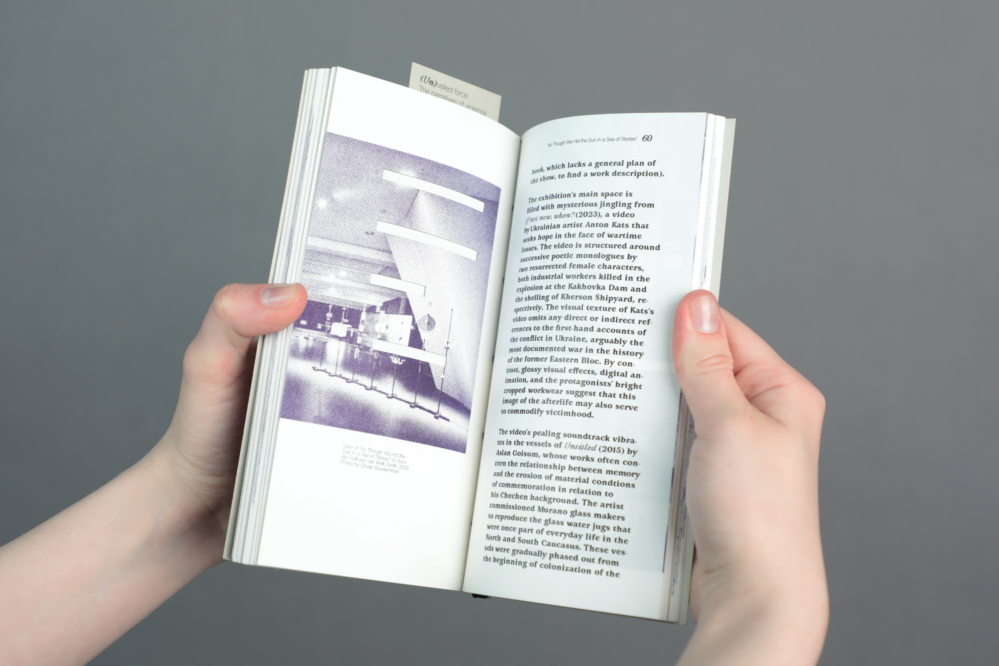
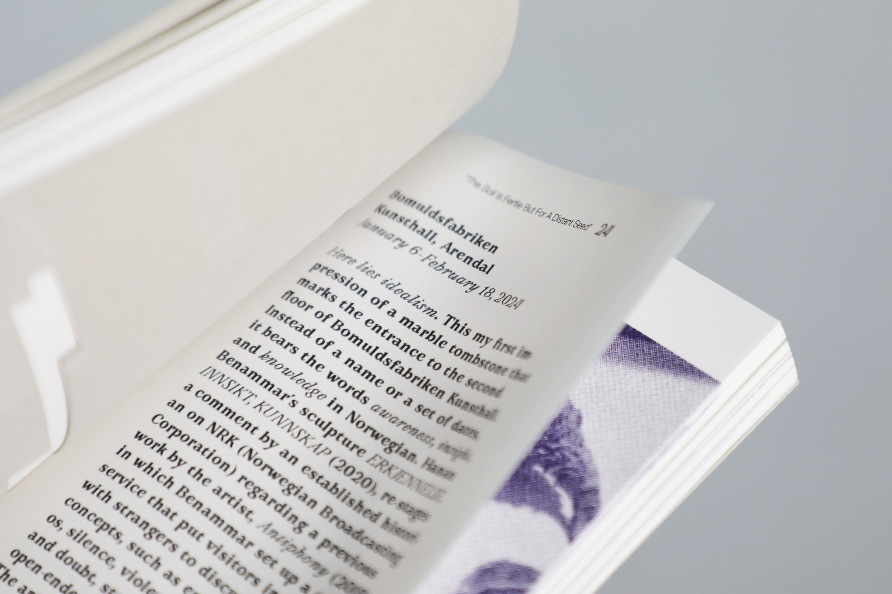
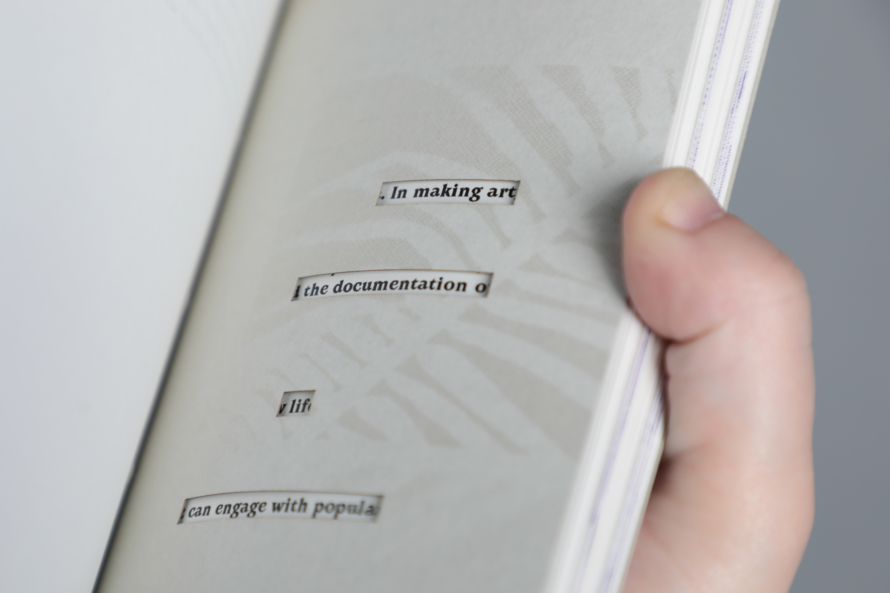
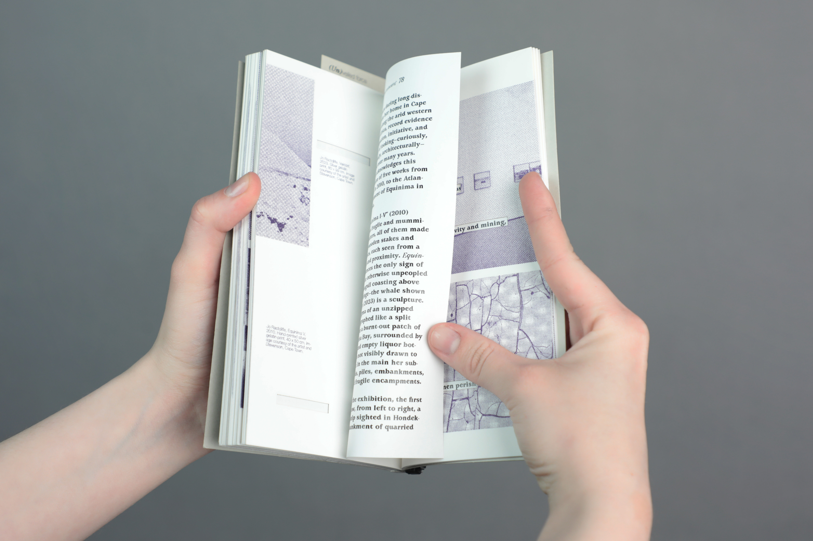
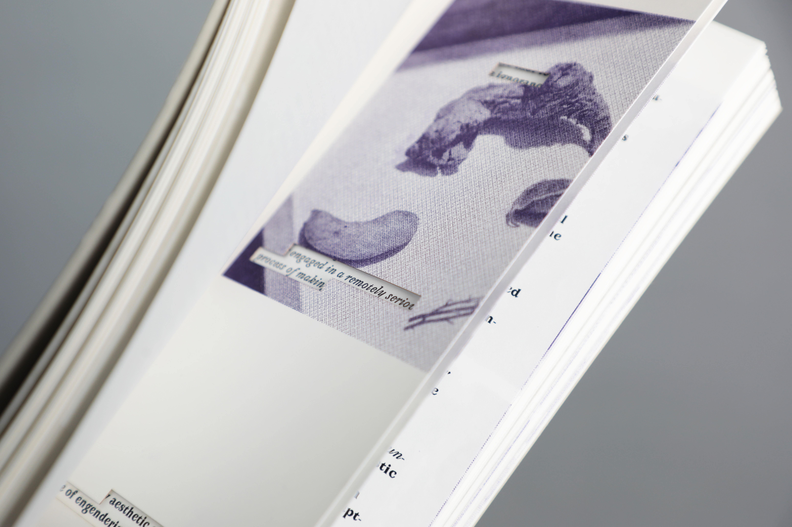
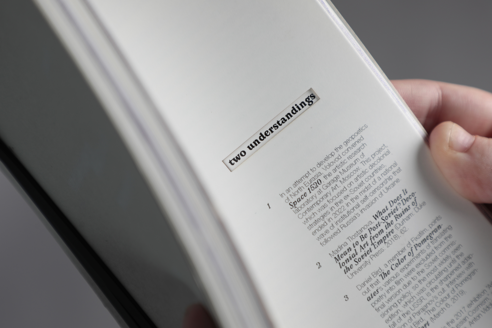
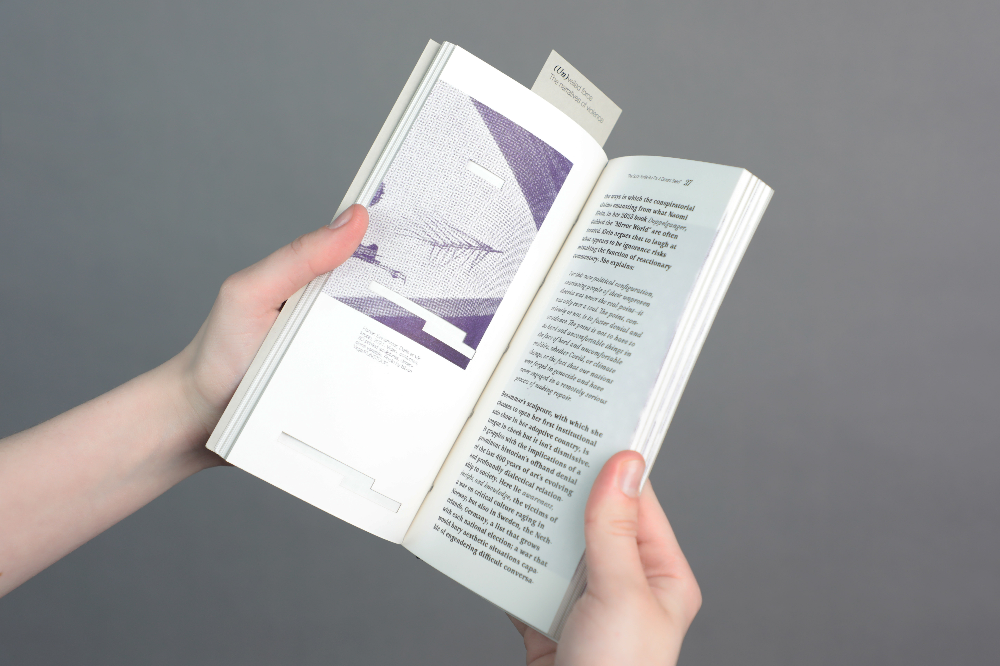

Publication
March 2024




The project was made in collaboration with
Tabitha Anderton and Carla Sanfratello Marco
RISO printed in white and purple
Laser-cutted, binded with a zip tie
Typefaces: Avara, Helvetica Neue
Paper: Biotop 80gr,
Biotop 250gr, Curious Matter
Guided by Remco van Bladel
ArtEZ
2024

(Un)veiled Force: The Narratives of Violence is a collaborative book project featuring a selection of E-flux Criticism articles. The book explores concepts of violence, ignorance, and censorship. Each article page is preceded by a thicker page with cutouts that frame only a few specific words from the next page. Detached from their context, they mislead the reader from the original meaning of the article. While trying to hide the truth about the violence, the book still leaves the reader the space for a choice: to look closer to the faded white ink, not to trust the isolated words, to reveal the underlayer. The reader can choose not to ignore the narrative of violence.

